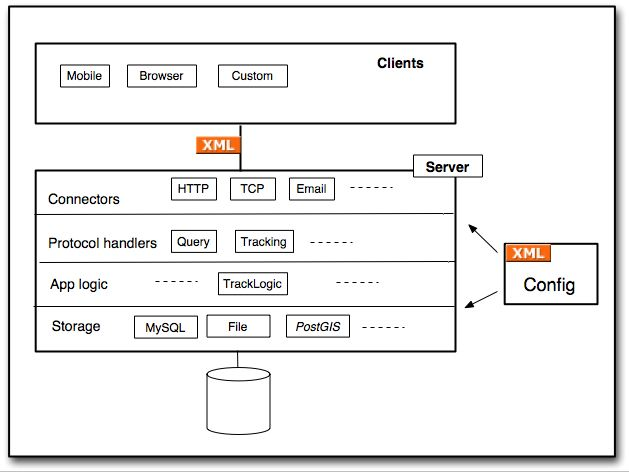

Credits
- GeoWanking mailing list
- helping me out with newbie GIS-questions
- Mapping Hacks
- showing me how to "do-GIS-yourself"
- Waag Society,
KKep,
CityWorks
- organizing GeoTracing projects
- (letting me make a living out of GeoTracing)
- Eric Meyer
- creating S5 HTML Slide Show System
Subjects
- History
- Concepts
- Applications
- Demos
- Technical
- Development
- Questions
About Me
- 20+ years in software industry
- 1985-1996 AT&T Bell Labs/Lucent
- 1997+ Just Objects B.V.
- independent consultant/developer/trainer
- emphasis on OOT/Java/Multimedia/Webtech/AJAX
- OSS projects: Pushlets, GeoTracing, CowCatcher
- 2004+: locative media and GIS projects
- 2006+: fulltime GeoTracing projects
GeoTracing in a Nutshell
Software platform for creating tracking & tracing applications
- remote (mobile) track recording
- live tracking
- geotagged media (locative media)
- user-centric/multi-user interaction
- navigation/LBS (v2+)
- application-driven development
- tech: C/S, mobile, GPS, Java, AJAX, Google Maps
- OSS: LGPL, geotracing.codehaus.org
Overview

Application Domains
- "Classic" tracking & tracing
- Community mapping
- Sports
- Field observation (e.g. biology)
- Gaming
- Tourism
- Education
- Arts
Thoughts
- "Classic GIS": WHAT + WHERE
- maps with features
- GeoTracing: WHO + WHEN + WHAT + WHERE
- user-centric
- time-based layers
- Allow "Digital geo-story telling"
- mapping experience
- navigating experience (2.0)
History
Applications - Realized
|
Traceland |
GeoSailing |
N8Spel |
|
OtterTracing |
GeoSkating |
Sense of the City |
Applications - In Progress
|
Sense of Brainport |
Bliin |
MLGK |
|
Digital Dowsing-rod |
GeoBiking |
GeoSailing v2 |
Try it out
- Sign up and login
- go to Traceland app
- select "My | Admin"
- sign up
- login
- download/install MobiTracer on your phone
- need phone with J2ME (MIDP2.0) and Bluetooth Java (JSR-82)
- Start tracing!
MobiTracer
Architecture

Base Components - Server
- Container model
- Spring-like
- declarative components (XML)
- .war file deployment (J2EE)
- Protocol support
- all-XML
- core session protocol
- extensible service protocols
- Data
- storage layer (Oase)
- multi-database support
- now MySQL, PostGIS planned
Base Components - Clients
- MobiTracer
- mobile phone client (Java/J2ME)
- WebTracer (prototype)
- browser/AJAX client (possibly PDA as well)
- connects locally to GPS through GPSDoor
- WebEditor
- manage tracks/media
- WebViewer
- public viewing
- AJAX+Google Maps
Externals
- KeyWorx
- supports GT main architecture
- versatile portal/CMS framework
- multi-user/multimedia/multi-channel
- extensible XML protocol
- Spring-like container model
- Pushlets
- HTTP/AJAX-based notification framework
- Google Maps
- Research: AJAX lib (Dojo?, MapBuilder?)
- Research: spatial RDBMS (PostGIS?)
XML Protocols
- session protocol
- extends KeyWorx core protocol
- register/login/logout/authorization
- extensible services: media management, tracking, etc
- notification service
- Pushlets-based
- notification of actions in sessions (user-move, media-create, etc)
- will be integrated in session protocol
- REST services
- all queries, exports (GPX, WFS?)
Example Protocol Sequence
Database Model (v1)

OSS Development
- OSS (LGPL) since aug 2006
- hosting: geotracing.codehaus.org
- source code in Subversion
- base framework
- applications
- many TODOs: documentation, project organization, attract developers,..
Subversion Layout
- svn.geotracing.codehaus.org
- core framework (base) and apps combined
- each app has SVN trunk, tags, branches
bliin.com
- Location user- and media search
- Track, trace and interact with other logged on users & share personal locative media in real-time on a map
- Multi-User2User localisation, publication and communication
- Desktop Client - Pocket Client
What's a Bliin ?
- Bliin is about Navigating Experiences ... experiences are contained within locations ... locations are constantly traversed by users ... who continuously add experience ...
- A bliin is a personalised, dynamic perspective - a kind of radar - on a location and the users & media within it
- 1. Make new bliin >> 2. select location & radius >> 3. select tags of interest >> 4. view & save bliin
- Saved bliin's carry from desktop to pocket client
- work-in-progress